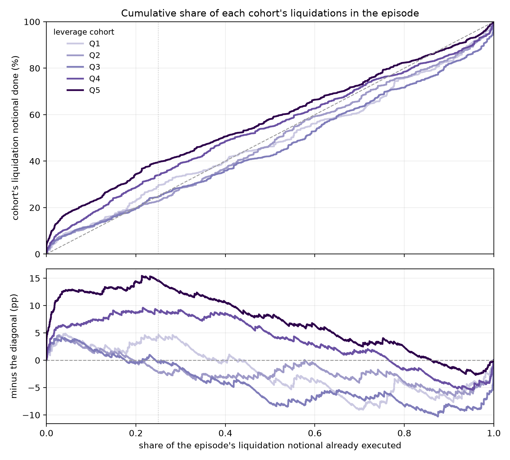
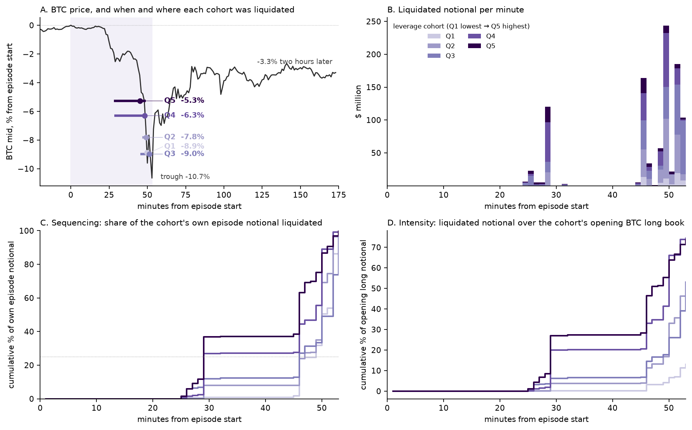
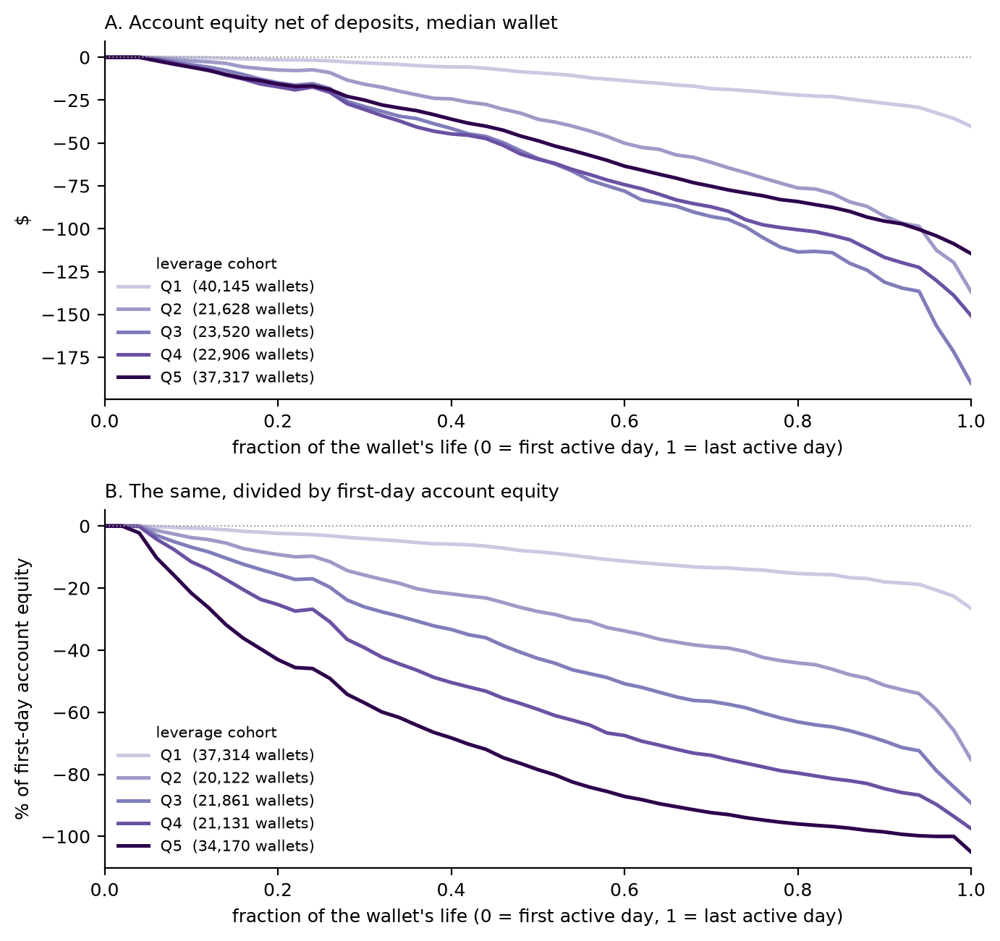
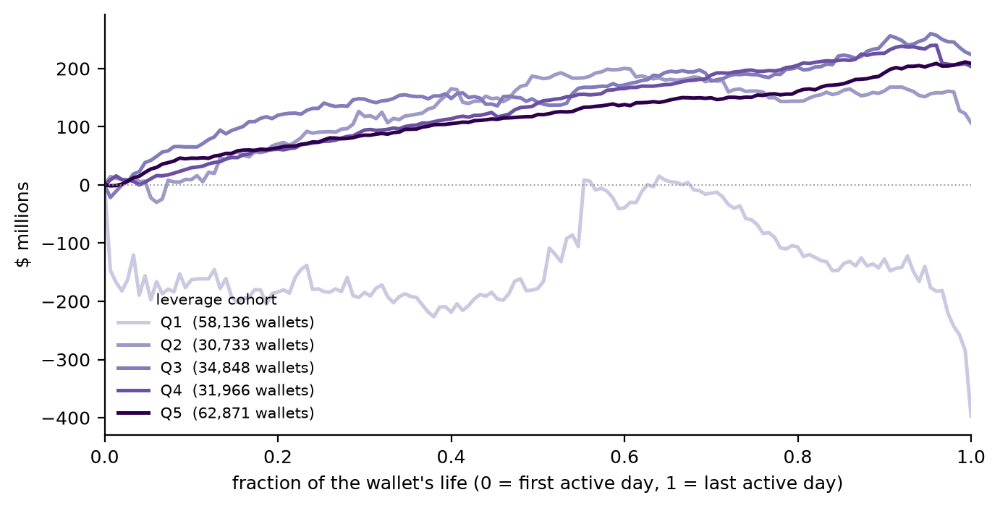
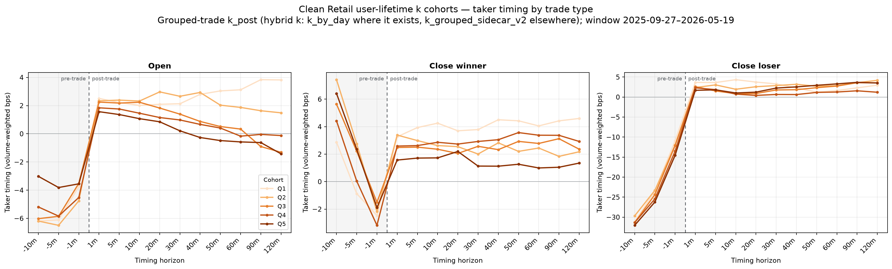
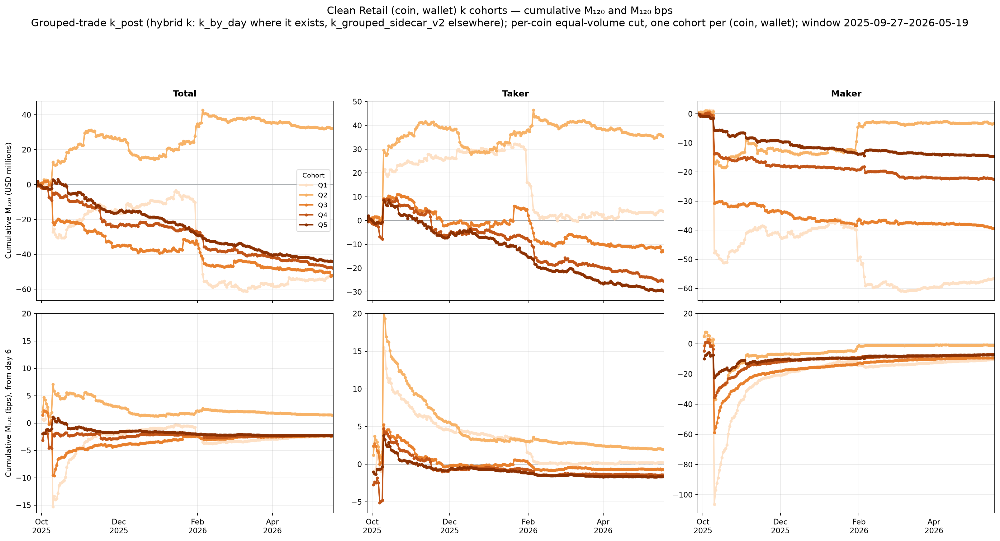
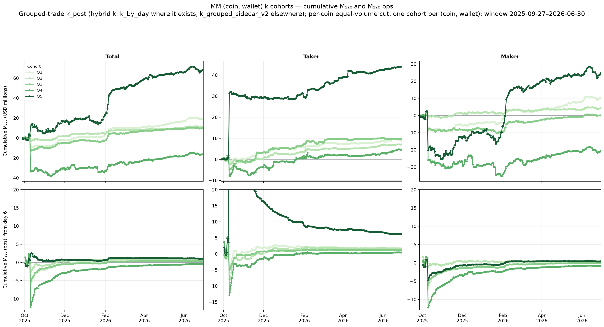
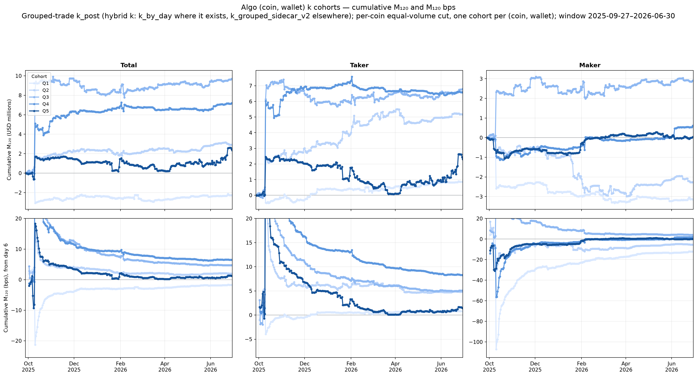

Leverage and Liquidations: Proposed Section Rewrite
Draft prose and exhibits for the leverage subsection and its appendix. Created September 9, 2026; updated September 16, 2026. Text in blue marks a decision for the authors, or a source path to remove before publication. Allium/experiments/leverage/leverage_cohort/wrapup_2026-09-06/report/leverage_rewrite.html
Abstract: proposed revision
Perpetual futures trade largely outside reporting infrastructure, so who loses is unknown. On Hyperliquid, a decentralized venue with a complete on-chain record, we classify wallets by how they trade; front-end traders, whom we interpret as predominantly retail, lose $1.11 billion over 15 months. Fees account for $725 million of that loss, net forced exits $226 million, and voluntary trading $154 million. Front-end flow follows recent returns, and the post-trade price impact of their voluntary taker trades decays with horizon, reverting past zero after loss-realizing closes. Front-end traders also run far more leverage, and their leverage use is persistent within wallets: median opening leverage is 7.2×, against 1.9× for algorithmic takers and 1.1× for algorithmic market makers. We sort front-end wallets into five cohorts of equal taker volume. The share of closing volume that ends in a forced liquidation rises from 0.41% in the lowest-leverage cohort to 7.31% in the highest, and the share of wallets liquidated at least once rises from 11% to 55%. The median position is liquidated after the market has moved 14.7% against it in the lowest cohort and 1.8% in the highest. The two highest cohorts carry 44% of the five cohorts’ net trading loss on 10% of their equity.
Introduction: replacement leverage paragraph
Leverage is a persistent trading choice at the wallet level and is much higher among front-end traders. Median opening leverage is 7.2× for front-end traders, compared with 1.9× for algorithmic takers and 1.1× for algorithmic market makers. Within the front-end population, the lowest- and highest-leverage cohorts open at median leverage of 2.5× and 20.6×, respectively, and a wallet tends to remain near its lifetime leverage range when it trades. On voluntary taker trades, the 120-minute markout M120 falls from +1.30 bps of notional in Q1 to −1.40 bps in Q5. After fees, and counting maker, liquidation and auto-deleveraging trades, Q1 loses $46 million and Q5 loses $119 million. The share of closing volume that ends in a liquidation rises from 0.32% to 7.00%, and liquidation notional rises from $0.81 billion to $7.73 billion. Higher leverage also brings the liquidation boundary much closer: the median Q5 position is liquidated after the underlying has moved 1.8% against it from its average entry price, while the median Q1 position survives a 14.7% adverse move before liquidation. High leverage is liquidated often and after shallow moves. Low leverage is liquidated rarely, and mostly during extreme price moves near the bottom: in the largest liquidation episodes, its liquidations lose a further 712 bps over the following 2 hours, against 9 bps for the highest cohort. Losing is not the end of the story: the lowest-leverage cohort withdraws $422 million more than it deposits over wallet life, while every higher-leverage cohort is a net depositor.
Terms used throughout
- Front-end traders, algorithmic takers, algorithmic market makers. The three wallet classes assigned daily by the classification of Section 5.1, from order type, cancellation behaviour and maker share. Front-end traders are those trading through the exchange’s own web interface, and we interpret them as predominantly retail.
- Trade purpose. Every fill is an opening trade, a gain-realizing close, a loss-realizing close, a liquidation, or an auto-deleveraging fill. Reversals are folded into the leg they close.
- Half-spread. The distance from the mid at the trade to the fill price, in basis points of notional, signed so that a positive value is a cost to the trader.
- Execution cost. Same quantity as a contribution to profit and loss, so negative. It does not depend on the horizon.
- Price impact, T120. The price move from the mid at the trade to the mid 120 minutes later, signed in the trade’s direction, in basis points of notional.
- Markout, M120. Price impact plus execution cost, equivalently the move from the fill price to the mid 120 minutes later. Positive means the price kept moving the trade’s way.
- Slippage. The distance from the first-level price available at the trade to the average fill price, in basis points, which is what a trade pays for walking the book.
- Standardized effective leverage, k. The account’s maintenance margin divided by its equity E, read just after the trade:
k = (1/E) · Σc [ |Nc| / (2 Lcmax) − dc ], Nc = position size × mark price.The sum runs over the account’s cross-margined positions; an isolated position uses its own margin as E. Lcmax is coin c’s maximum leverage. Under Hyperliquid’s margin tiers, a position whose notional passes a tier’s lower bound gets a lower maximum leverage, and dc is the tier’s maintenance deduction, which keeps the margin continuous at the bound; dc = 0 in the first tier. The exchange liquidates at k = 1. A fresh single-coin position at leverage ℓ has k = ℓ / (2 Lmax), so 10× on ETH is k = 0.20 and k = 0.5 is the coin’s maximum leverage. The cohort cut used here takes Lmax from each coin’s top tier and sets dc = 0, which matters only for positions above the first tier bound.
- Leverage cohort, Q1 to Q5. For each front-end wallet, the volume-weighted median of min(k, 1) over its opening trades. Wallets are sorted on this median into five groups of equal front-end taker volume, Q1 the lowest. Table L1 gives the boundaries.
- Auto-deleveraging. The protocol closing a profitable position on the opposite side when a liquidation cannot clear against the book. It transfers value at the group level and does not return it to the liquidated wallet.
Liquidations
Forced exits concentrate on front-end traders. Front-end traders bear 80.1% of the liquidation losses recorded for the three labeled groups, and outside October 10, 2025, the day of the marketwide liquidation cascade, they account for 97.6% of three-group liquidation volume. Their liquidations are spread through the sample: only 9.3% of front-end liquidation volume occurs on October 10, compared with 79.7% for algorithmic market makers.
Liquidations demand far more immediacy than voluntary exits. The average liquidation is $38.8 thousand and pays a 6.67 bps half-spread, while the loss-realizing close, the largest of the three voluntary purposes on both measures, averages $24,011 and 0.48 bps. Liquidations also arrive in crowded moments: 95.6% share their millisecond timestamp with another wallet’s taker trade.
Trade-Purpose Execution Conditions
| Trade purpose | Half-spread (bps) | Average trade notional ($k) | Trades sharing their timestamp with another wallet’s taker trade (%) |
|---|---|---|---|
| Opening | +0.28 | 10.0 | 29.0 |
| Gain-realizing close | +0.31 | 21.1 | 32.7 |
| Loss-realizing close | +0.48 | 24.0 | 35.7 |
| Liquidation | +6.67 | 38.8 | 95.6 |
Notes. March 27, 2025 to May 19, 2026, October 10 included. Ten coins, taker side. Values are computed within coin before equal-weight averaging. The last column is the probability that a taker trade shares its millisecond timestamp with a taker trade from at least one other wallet.
Within the same coin-minute and at the same trade size, the liquidation premium is far smaller than the unconditional gap. Conditional on log trade size, order type and coin-day-minute fixed effects, the liquidation coefficient averages +1.99 bps for half-spread and +0.06 bps for slippage, against an unconditional liquidation half-spread of 6.67 bps. The two magnitudes are different estimands measured on different samples and are read alongside each other rather than differenced; the contrast is consistent with an important role for trade size and for the conditions prevailing in the minutes when liquidations arrive.
The adverse price path continues after the forced sale. Outside October 10, liquidation price impact is −16.40 bps after 5 minutes and −27.50 bps after 120 minutes, while every voluntary trade purpose remains positive at the 120-minute horizon. October 10 deepens the 120-minute liquidation path to −41.37 bps.
Post-Trade Price Impact by Trade Purpose
| Horizon | Opening | Gain-realizing close | Loss-realizing close | Liquidation ex Oct-10 | Liquidation incl. Oct-10 |
|---|---|---|---|---|---|
| 5 min | +2.11 | +2.63 | +3.39 | −16.40 | +24.83 |
| 30 min | +1.82 | +2.53 | +3.84 | −26.80 | −23.63 |
| 60 min | +1.28 | +3.07 | +2.66 | −28.74 | −52.84 |
| 120 min | −0.12 | +3.00 | +5.46 | −27.50 | −41.37 |
| Notional ($B) | 424 | 211 | 241 | 14.9 | 16.8 |
Notes. March 27, 2025 to May 19, 2026. Entries are basis points of the notional in the final row. Liquidation is shown with and without October 10. Including that day, the column opens at +24.83 bps at 5 minutes and is −23.63 bps at 30 minutes: October 10 carries $4.0 billion of liquidation notional at prices that were still falling, so its trades enter the 5-minute average before the fall registers and dominate every later horizon. From 30 minutes on the crash day deepens a path that is already adverse without it; at 5 minutes the two conventions disagree in sign.
Auto-deleveraging returns part of the forced-exit transfer to profitable positions on the opposite side. Front-end traders receive $117.58 million through ADL against $343.66 million of liquidation losses, leaving $226.08 million of net forced-exit losses. The next subsection asks which front-end wallets reach this boundary.
Leverage
Sample. This subsection uses fills from September 27, 2025 to May 19, 2026. The paper’s main sample opens on March 27, 2025, so this subsection starts six months later and covers 277 of its 461 days. Leverage k needs the account equity behind each trade, which only the exchange’s daily account snapshots provide, and those snapshots begin on September 27, 2025.
We measure leverage with k, the account’s maintenance margin over its equity just after the trade, defined in the terms above. For each front-end wallet we take the volume-weighted median of min(k, 1) over its opening trades, and we sort wallets on that median into five cohorts of equal front-end taker volume, Q1 the lowest. Table L1 gives the cohort boundaries and where the wallets sit inside them.
Table L1. Front-End Leverage Cohorts
| Q1 | Q2 | Q3 | Q4 | Q5 | |
|---|---|---|---|---|---|
| k range | 0 – 0.087 | 0.087 – 0.138 | 0.138 – 0.240 | 0.240 – 0.363 | 0.363 – 1 |
| Wallets | 76,698 | 36,193 | 39,231 | 41,125 | 79,068 |
| Wallet median k (p25 | p50 | p75) | 0.021 | 0.040 | 0.061 | 0.100 | 0.118 | 0.126 | 0.158 | 0.189 | 0.203 | 0.252 | 0.258 | 0.304 | 0.457 | 0.501 | 0.510 |
Notes. Ten coins, September 27, 2025 to May 19, 2026, October 10 excluded. Wallet median k is the wallet’s volume-weighted median of min(k, 1) over its opening trades; the last row gives its percentiles across the cohort’s wallets. Q5 bunches at k = 0.5, the coin’s maximum leverage. Source tables/cohort_thresholds_by_population.csv, descriptives_by_cohort_retail.csv.
Front-end traders run more leverage than the algorithmic groups, and the gap is wide at every point of the distribution. Median effective leverage at the opening trade is 7.2× for front-end traders, 1.9× for algorithmic takers and 1.1× for algorithmic market makers, and the interquartile range is 3.4×–14.8× against 1.0×–4.6× and 0.6×–2.3×. Only 20% of front-end taker volume comes from wallets inside the Q1 range of k, against 57% of algorithmic-taker volume and 92% of market-maker volume. That difference is why a marketwide fall is the only thing that reaches a market maker’s liquidation boundary, and why 79.7% of market-maker liquidation volume falls on October 10, 2025 alone.
Within front-end traders, higher leverage is run by much smaller accounts. The five cohorts hold equal taker volume by construction, while median opening leverage rises from 2.5× in Q1 to 20.6× in Q5. Only the taker side is equalized: maker volume falls from $53.2 billion in Q1 to $19.5 billion in Q5, not monotonically, so the taker share of a cohort’s own volume rises from 77% to 90% and the higher-leverage cohorts do less of their trading by posting. Median active-day account equity falls from $145 to $22 over the same cohorts, while the median wallet’s average trade rises from $250 to $1,099. Trade size therefore rises as the account behind it shrinks: the median wallet trades 1.2 times its account equity per trade in Q1 and 27 times in Q5. Higher-leverage wallets are also newer and shorter-lived, with a median life of 25 calendar days against 41 to 53 days in the other cohorts. They are alike on trading frequency, placing 2.7 to 3.6 trades per active day across the cohorts.
Table L2. Leverage and Account Characteristics (p25 | median | p75)
Panel A. Trader groups
| Group | Wallet median k | Opening leverage (×) | Taker volume in Q1 range (%) |
|---|---|---|---|
| Front-end traders | 0.074 | 0.198 | 0.404 | 3.4 | 7.2 | 14.8 | 20 |
| Algorithmic takers | 0.038 | 0.100 | 0.255 | 1.0 | 1.9 | 4.6 | 57 |
| Algorithmic market makers | 0.022 | 0.062 | 0.139 | 0.6 | 1.1 | 2.3 | 92 |
Panel B. Front-end leverage cohorts
| Q1 | Q2 | Q3 | Q4 | Q5 | |
|---|---|---|---|---|---|
| Opening leverage (×) | 1.3 | 2.5 | 4.7 | 3.1 | 5.1 | 8.6 | 4.5 | 7.8 | 12.8 | 7.4 | 12.2 | 18.8 | 12.5 | 20.6 | 33.1 |
| Taker volume ($B) | 175.3 | 181.9 | 178.7 | 178.8 | 178.7 |
| Maker volume ($B) | 53.2 | 35.6 | 43.2 | 30.5 | 19.5 |
| Taker share (%) | 76.7 | 83.6 | 80.5 | 85.4 | 90.2 |
| Account equity ($) | 99 | 145 | 30 | 103 | 177 | 28 | 105 | 157 | 23 | 65 | 79 | 10 | 25 | 22 | 3 |
| Life (days) | 6 | 41 | 121 | 11 | 53 | 137 | 11 | 52 | 137 | 8 | 41 | 122 | 3 | 25 | 97 |
| Trades per active day | 1.9 | 2.7 | 6.6 | 2.0 | 3.0 | 6.9 | 2.0 | 3.5 | 7.9 | 2.0 | 3.3 | 6.8 | 2.0 | 3.6 | 7.0 |
| Average trade size ($) | 44 | 250 | 1,973 | 172 | 896 | 4,399 | 228 | 1,102 | 5,258 | 274 | 1,172 | 5,302 | 307 | 1,099 | 4,424 |
| Trade size over equity (×) | 0.43 | 1.2 | 3.0 | 1.2 | 3.4 | 7.9 | 1.8 | 4.8 | 11 | 4.0 | 10 | 22 | 12 | 27 | 56 |
Notes. Ten coins, September 27, 2025 to May 19, 2026, October 10 excluded. Percentiles are across wallets, each wallet counting once. Opening leverage is effective leverage at the opening trade, on (wallet, coin, day) cells weighted by opening notional and capped at twice the coin’s maximum. Taker share is the cohort’s taker volume over its taker plus maker volume. The account-equity row instead gives three medians of day-end account value: on the wallet’s first active day, across its active days, and on its last active day; it excludes the 1.1% of wallets with no snapshot. Life runs from first to last trade, in calendar days. Trade size over equity uses each wallet’s active-day median equity, so it is not the ratio of the two rows above it. Source tables/k_quantiles_by_population.csv, open_leverage_quantiles_by_population.csv, population_share_in_frontend_bands.csv, descriptives_by_cohort_retail.csv, equity_av_by_cohort.csv and equal_vol_volweighted_lifetime_median_grouped_trade/retail/tables/volume_by_cohort.csv, scope agg.
Leverage use is persistent within wallets. 66% of Q1 opening volume and 79% of Q5 opening volume falls in the wallet’s own cohort range of k, and 75%–93% of every cohort’s opening volume falls in its own range or an adjacent one (Appendix Table A). We therefore use the median effective leverage at opening trades as a wallet characteristic and compare outcomes across these cohorts.
Trading outcomes deteriorate with leverage, and the deterioration is in the price path after the trade rather than in execution cost. At the 120-minute horizon, front-end takers’ markouts on voluntary trades fall from +1.30 bps in Q1 to between −0.80 and −1.40 bps in Q3 to Q5 (Table L3). Execution cost stays in a narrow 2.07–2.59 bps range with no leverage order, while price impact T₁₂₀ falls from +3.88 to +0.66 bps. Splitting price impact by trade purpose locates the gradient in the opening trade, and shows that the cohorts trade into the same states: every cohort opens after the price has already moved 3 to 7 bps in the direction of the fill and realizes losses after an adverse move of about 30 bps, and they separate only after the fill (Appendix Table C and Appendix Figure A). The loss accrues steadily through the sample rather than in a few events, on the taker book above all but on the maker book as well (Appendix Figure B).
Each front-end cohort earns from price impact and pays execution cost, fees and liquidation losses, and every cohort’s total is a loss (Table L3). Fees of $58 million to $74 million are the largest cost in every cohort, and the net loss runs from $46 million in Q1 to $98 million to $131 million in Q3 to Q5. Relative to the capital behind the trades, the gradient is far steeper: Q4 and Q5 carry 44% of the five cohorts’ net loss on 10% of their equity.
Table L3. Dollar Profit and Loss by Leverage Cohort ($ millions)
| Q1 | Q2 | Q3 | Q4 | Q5 | |
|---|---|---|---|---|---|
| T120taker | +67.6 (+3.88) | +54.3 (+3.03) | +30.7 (+1.75) | +24.8 (+1.42) | +11.4 (+0.66) |
| ECtaker | −45.2 (−2.59) | −43.8 (−2.44) | −45.1 (−2.56) | −38.8 (−2.22) | −35.4 (−2.07) |
| M120taker | +22.7 (+1.30) | +10.5 (+0.59) | −14.4 (−0.82) | −14.0 (−0.80) | −24.0 (−1.40) |
| M120maker | +15.9 | +25.3 | −0.6 | −7.1 | −10.8 |
| M120Liq | −50.0 | −113.2 | −66.0 | −24.7 | −11.8 |
| M120ADL | +30.1 | +37.7 | +15.5 | +11.5 | +1.9 |
| Total M120 | +18.7 | −39.7 | −65.5 | −34.3 | −44.7 |
| Fees | −65.0 | −58.5 | −65.5 | −64.1 | −74.2 |
| Net | −46.3 | −98.2 | −131.0 | −98.5 | −118.9 |
| Share of net loss (%) | 9.4 | 19.9 | 26.6 | 20.0 | 24.1 |
| Share of equity (%) | 56.4 | 19.2 | 14.2 | 6.4 | 3.8 |
Notes. Ten coins, September 27, 2025 to May 19, 2026, every date included. Rows follow the paper’s decomposition table. Parentheses: bps of the cohort’s voluntary taker notional. Taker rows cover voluntary taker trades; the maker, liquidation and ADL rows are mutually exclusive; Total M120 sums all trades. Net is Total M120 plus fees. Share of equity uses each wallet’s active-day median account equity, summed over the cohort. Funding F120 is not included: no 120-minute funding series covers this window. The paper’s appendix puts it below 0.02 bps of taker volume in every cohort. Source tables/cohort_ledger_pnl_split.csv, built by code/build_cohort_ledger.py from data/extracts/user_coin_bucket/.
Higher leverage changes how positions close. The share of closing volume that ends in a liquidation rises 18-fold across the cohorts, from 0.41% in Q1 to 7.31% in Q5, and the share of wallets liquidated at least once rises from 11% in Q1 to 55% in Q5. Liquidation notional rises with it, from $0.81 billion to $7.73 billion. High-leverage liquidations arrive on ordinary trading days: outside October 10, half of Q5 liquidation notional falls on 35 days, against 7 days for Q1, and 42.7% of Q1 liquidation notional falls on October 10 alone, against 4.2% of Q5 (Table L4).
The price move it takes to close a position falls sharply with leverage, for voluntary exits but even more for forced ones. The entry-to-exit return is the price return from the position’s average entry price to the closing fill, signed by the position direction so that a negative value means the market moved against the position. The median liquidation follows a 14.7% adverse move in Q1 and a 1.8% adverse move in Q5, a 8-fold difference. The median loss-realizing close follows a 0.4% adverse move in Q1 and a 0.3% adverse move in Q5, a 1.5-fold difference.
Low-leverage wallets are liquidated rarely, but the liquidations that do occur are more adverse. They arrive in larger liquidation episodes with sharper price moves. A liquidation episode is a run of liquidations in one coin, across all wallets, with no gap longer than 15 minutes. Ranking episodes by liquidation notional, the 113 largest together hold half of all liquidation notional, and each has at least $26 million of liquidations. These 113 episodes hold 74% of Q1 liquidation notional and 31% of Q5’s. The median Q1 liquidated dollar sits in an episode with $95 million of liquidations across all wallets and a 6.3% price range, against $15 million and 1.3% for Q5. The price then comes back against the forced sale. Inside the 113 largest episodes, the 120-minute markout on liquidation orders averages −712 bps across Q1 wallets and −9 bps across Q5 wallets; outside them it is −41 bps and −7 bps.
Table L4. Liquidation Incidence and Price Path by Leverage Cohort
| Q1 | Q2 | Q3 | Q4 | Q5 | |
|---|---|---|---|---|---|
| Incidence | |||||
| Liquidation share of closing volume (%) | 0.41 | 1.60 | 1.71 | 3.41 | 7.31 |
| Wallets liquidated at least once (%) | 10.5 | 28.1 | 39.2 | 46.5 | 54.5 |
| Liquidation notional ($B) | 0.81 | 2.66 | 2.79 | 4.30 | 7.73 |
| Share on October 10 (%) | 42.7 | 35.0 | 31.5 | 16.2 | 4.2 |
| Days holding 50% / 80% | 7 / 21 | 3 / 16 | 18 / 59 | 25 / 71 | 35 / 95 |
| Liquidation episodes | |||||
| Share in the 113 largest (%) | 73.9 | 78.6 | 56.8 | 42.7 | 31.0 |
| Episode notional ($M) | 95 | 263 | 51 | 23 | 15 |
| Episode price range (%) | 6.3 | 8.3 | 3.5 | 2.0 | 1.3 |
| Median entry-to-exit return (%) | |||||
| Gain-realizing close | +0.6 | +0.7 | +0.7 | +0.7 | +0.5 |
| Loss-realizing close | −0.7 | −0.5 | −0.4 | −0.6 | −0.3 |
| Liquidation | −14.7 | −8.3 | −5.3 | −3.2 | −1.8 |
| Liquidation M₁₂₀ (bps) | |||||
| Inside the 113 largest episodes | −712 | −475 | −288 | −85 | −9 |
| Outside them | −41 | −25 | −24 | −7 | −13 |
Notes. Ten coins, September 27, 2025 to May 19, 2026. Every date is included except in two blocks: the concentration row counts days outside October 10, and the entry-to-exit block excludes October 10. Episode notional and price range are medians, over the cohort’s liquidation notional, of the episode each liquidation sits in, counting every episode; the price range is the highest minus the lowest liquidation fill price, over the first. The entry-to-exit return is s(pf/pi − 1), with pi the average entry price recovered from closed PnL, pf the closing fill price and s the position direction; it is a median across closing trades. Liquidation M₁₂₀ is each wallet’s notional-weighted markout, averaged across wallets. Source tables/liq_concentration_by_day.csv, adv_move_quantiles.csv, liq_cascade_contrast.csv (code/build_cascade_contrast.py).
Inside a large liquidation episode, the two highest-leverage cohorts are liquidated earlier. The first quarter of an episode’s total liquidation notional holds 39% of Q5’s liquidated notional in that episode and 34% of Q4’s, against 23% to 29% for Q1 to Q3 (Figure L1). The first half holds 58% and 55%, against 42% to 47%.

Figure L1. When each leverage cohort is liquidated inside a large liquidation episode. The 146 largest episodes, every date. Horizontal axis: share of the episode’s all-wallet liquidation notional already executed. Top: cumulative share of the cohort’s own liquidation notional in the episode; the dashed diagonal is a cohort liquidated evenly. Bottom: the top curve minus the diagonal. The dotted line marks a quarter of the episode. Figure figures/lev_cascade_progress.png, built by code/build_cascade_contrast.py.
Q1 to Q3 stay close to the even spread through the first third of an episode and fall behind it afterwards. Q4 and Q5 are 10 to 15 percentage points ahead by a quarter of the episode and stay ahead until about 85% of it.
A single large cascade shows the same ordering inside one event. On October 10, 2025, BTC fell 10.7% from 20:28 to 21:21 UTC, its largest drawdown of the window, and the front-end group was liquidated for $976 million of BTC notional in those 53 minutes. The cascade arrives in two rounds. The two highest-leverage cohorts are taken in the first round: a quarter of Q4 and Q5 notional is liquidated by minute 28, against minute 46 or later for Q1, Q2 and Q3, and their volume-weighted average execution price is 6.3% and 5.3% below the episode start, against 8.0% to 8.5% for the three lower cohorts. The reversal follows the depth: BTC recovers to 3.3% below the start 2 hours after the trough, so the 120-minute markout on these liquidations is −173 bps for Q5 and −605 bps for Q1. Q5 also loses a larger share of its position: 74% of the BTC long notional it held going into the episode, against 13% for Q1.

Figure L2. The October 10, 2025 BTC cascade by leverage cohort. All front-end liquidation fills in BTC between 20:28 and 21:21 UTC, taker and maker, both sides, ADL excluded: 5,965 fills from 3,952 wallets, 40% of the notional maker-side. Panel A: each cohort’s bar spans the minutes in which the middle half of its liquidation notional executes, drawn at its volume-weighted average execution price; the dot marks half done. The shaded band is the episode. Panel D: the flow divided by the BTC long notional the cohort held at its last position snapshot before the episode, at the episode-start price. Figure figures/lev_oct10_cascade.png, table tables/oct10_cascade_by_cohort.csv.
To settle before publication: this is one episode, on October 10. It illustrates the mechanism and is not a sample statistic. Either label it as such in the caption, or move it to the appendix and keep Table L4 and Figure L1 as the section’s liquidation evidence.
A leverage limit of the kind the European Union’s markets regulator has said would apply to retail perpetuals would bind on exactly the high-leverage wallets: accounts whose median equity is under $30, opening at a median 20×, and losing more than their starting stake over a life of a few weeks (Figure L3, Panel B). On the other hand, such a limit may not prevent the lowest-leverage cohort from being liquidated during extreme price moves. That cost comes from being liquidated late in those moves, not from the leverage the wallet chose.
Every cohort loses money over the life of the wallet, and the loss grows with leverage relative to the capital the wallet starts with. Account equity net of deposits is the change in day-end account value less the change in net deposits since the first active day. It is therefore the wallet’s cumulative dollar profit and loss from trading: closed and unrealized PnL, net of fees and funding. By the last active day, the median wallet has lost 46% of its first-day account equity in Q1, 92% in Q2, 99% in Q3, 104% in Q4 and 115% in Q5 (Figure L3, Panel B). In dollars the median loss is $87 in Q1, $189 in Q2, $184 in Q3, $234 in Q4 and $120 in Q5. The loss builds up over the whole life rather than on the final day. The median wallet’s account equity net of deposits changes by $1 to $3 on its last active day, measured against its previous active day. Still, 12% of Q1 wallets and 16% to 18% of Q2 to Q5 wallets lose more than half of their first-day account equity on that last day.

Figure L3. Account equity net of deposits over the life of a front-end wallet, by leverage cohort. Front-end wallets whose life spans more than 10 calendar days. Horizontal axis: fraction of the wallet’s life, read at day round(x × (life − 1)), so x = 1 is the last active day; the 10-day floor keeps a short life from putting rounding steps in the median. Panel A: median across wallets of the change in day-end account value minus the change in net deposits since the first active day. Panel B: the same quantity divided by the wallet’s account value on its first active day, on wallets with a positive first-day value. Ten coins, September 27, 2025 to May 19, 2026, every date. Source tables/life_networth_by_cohort.csv; figure built by code/build_life_equity_figs.py.
What the wallets do next splits by leverage. Q1 is a net withdrawer over wallet life, taking out $422 million more than it deposits. Every higher-leverage cohort is a net depositor, from $66 million in Q2 to $233 million in Q4 (Figure L4). The share of wallets that finish as net withdrawers falls from 30% in Q1 to 22% in Q5. A loss above 100% of first-day account equity is possible only by depositing again, and the median Q4 and Q5 wallets end past that line (Figure L3, Panel B). A quarter of Q5 wallets end more than 560% of their first-day account equity below their deposits, against 123% in Q1.

Figure L4. Deposits minus withdrawals over the life of a front-end wallet, cohort total, by leverage cohort. All front-end wallets. Horizontal axis as in Figure L3. Q1’s total moves in large steps because a few large accounts carry it. Ten coins, September 27, 2025 to May 19, 2026, every date. Source tables/life_paths_normalized_closed_pnl.csv, column sum_net_deposits_usd; figure built by code/build_life_equity_figs.py.
Losing is not the end of the story. The high-leverage cohorts keep depositing while their losses accumulate, and as cohorts they put more money in than they take out.
Appendix: Leverage Construction and Robustness
The appendix reports the within-wallet transition matrix behind the persistence result, the three-group comparison at matched leverage, the horizon-by-purpose ladder behind Table L3 and the figures the main text cites, together with the construction checks for k. The leverage measure also reproduces the exchange’s liquidation boundary. Reconciliation against daily account snapshots has a median error of 0.31%, and the realized equity-change distribution places the liquidation mass at the boundary implied by opening utilization.
Appendix Table A. Where a Wallet’s Opening Volume Falls, by Its Lifetime Leverage Cohort
The two extreme cohorts hold their leverage from day to day: 66% of Q1 opening volume and 79% of Q5 opening volume falls in the wallet’s own lifetime band. The middle cohorts spread into their neighbours, holding 33% to 39% in their own band, and every cohort keeps between 75% and 93% of its opening volume in its own band or the band next to it. Q5 is the most concentrated because it opens at the coin’s maximum leverage day after day.
| Lifetime cohort | Coin-day in the Q1 band | Q2 band | Q3 band | Q4 band | Q5 band |
|---|---|---|---|---|---|
| Q1 | 65.8 | 15.4 | 10.7 | 3.7 | 4.4 |
| Q2 | 27.7 | 32.6 | 26.9 | 7.2 | 5.6 |
| Q3 | 10.5 | 16.2 | 38.1 | 20.5 | 14.7 |
| Q4 | 2.9 | 5.0 | 20.4 | 38.8 | 32.9 |
| Q5 | 1.3 | 1.5 | 4.2 | 13.9 | 79.1 |
Notes. September 27, 2025 to May 19, 2026, 10 coins, October 10 excluded. Front-end wallets. Each row is a lifetime cohort and cells are that cohort’s share of opening notional, so rows sum to 100. The band of a (wallet, coin, day) cell is the cohort interval its volume-weighted median leverage after opening trades falls in, using the boundaries of Table L1. Source tables/k_day_transition_retail.csv.
The leverage cohorts sort front-end wallets against each other, which leaves open whether the gradient is a leverage effect or a front-end effect. Appendix Table B holds leverage fixed and compares the three groups inside the same absolute leverage band. All three groups carry economically meaningful volume across the range, so the comparison is on common support rather than on an extrapolation.
The two components paid at the fill are measured precisely, and both favour the algorithmic groups. Front-end traders pay more in fees than market makers in all 7 bands, by 2.10 bps in the lowest band and 0.91 bps in the highest; the gap is smaller at high leverage than at low, but it is not monotone across the bands in between. They pay more in execution cost than market makers in 5 of the 7 bands, and that gap closes at the top, +0.25 bps with a 95% interval of [−0.43, +0.97]. Neither component depends on the markout horizon.
The 120-minute markout is too noisy to rank the groups. The front-end minus market-maker gap in the price-impact component contains zero in 6 of the 7 bands, but its confidence intervals are 5 to 20 bps wide, so the data is uninformative rather than evidence of equality. Read the markout column as a level and not as a ranking; the market-maker figures of +14.50 bps at k = 0.050–0.089 and +7.49 bps at k above 0.299 rest on $6.1 billion and $3.3 billion of volume from 422 and 1,049 wallets and carry intervals of the same width. The one comparison that is both large and precisely estimated is the forced exit. At leverage above k = 0.299, liquidations are 6.23% of front-end closing volume, with a 95% interval of [5.49, 6.97], against 0.31% [0.14, 0.55] for market makers and 2.28% [1.10, 3.84] for algorithmic takers, so 20 times the market-maker rate and 2.7 times the algorithmic-taker rate at the same leverage. Leverage does not explain the whole gap between groups.
Appendix Table B. Outcomes at Matched Leverage
| Leverage band, wallet k | Taker volume ($B) | Wallets | 120-min markout (bps) | Fees (bps) | Liquidation share of closing volume (%) |
|---|---|---|---|---|---|
| k < 0.011 | 11.1 | 10.2 | 3.2 | 7,917 | 517 | 1,056 | +0.87 | +1.36 | −0.34 | −3.89 | −1.79 | −2.67 | 3.18 | 0.00 | 0.08 |
| 0.011 – 0.024 | 19.0 | 29.5 | 12.1 | 10,457 | 438 | 824 | −1.37 | +0.89 | +4.93 | −3.72 | −1.68 | −2.85 | 1.45 | 0.00 | 0.09 |
| 0.024 – 0.034 | 51.4 | 8.2 | 2.9 | 6,794 | 254 | 554 | −0.36 | +0.22 | +2.35 | −2.67 | −1.94 | −2.43 | 0.86 | 0.01 | 0.02 |
| 0.034 – 0.050 | 34.2 | 8.2 | 2.4 | 10,844 | 309 | 868 | −0.92 | +1.97 | +0.31 | −3.54 | −1.75 | −3.23 | 0.55 | 0.02 | 0.02 |
| 0.050 – 0.089 | 98.5 | 6.1 | 3.4 | 17,715 | 422 | 1,638 | +1.27 | +14.50 | −1.54 | −3.29 | −2.59 | −3.45 | 0.84 | 0.44 | 0.07 |
| 0.089 – 0.299 | 302.5 | 2.3 | 22.9 | 54,342 | 762 | 2,302 | −1.25 | +0.96 | −0.85 | −3.41 | −2.90 | −3.00 | 1.74 | 0.61 | 0.39 |
| k > 0.299 | 189.9 | 3.3 | 8.5 | 105,668 | 1,049 | 2,599 | −1.43 | +7.49 | −2.39 | −3.97 | −3.06 | −3.22 | 6.23 | 0.31 | 2.28 |
Notes. Every cell reports front-end traders | algorithmic market makers | algorithmic takers. Taker side only. Bands are cut on a log-k grid so that each band holds at least $2.3 billion of taker volume and at least 250 wallets in each of the three groups; 7 bands clear that rule. The 120-minute markout is the price move from the fill to the mid 2 hours later, signed in the trade’s direction. Liquidation share of closing volume is a volume statistic and does not depend on the markout horizon. 95% intervals come from a 1,000-replication paired day-block bootstrap and are quoted in the text for the comparisons the section relies on. Source shouqiao-data/reports/same_k_newk_full.md.
Built on a leverage measure taken over all listed instruments and on a 211-day window, both different from the rest of the section. Rebuild on the paper’s 10-coin leverage and window before publication; the bands and the ordering are not expected to move.
The behavioral falsification is whether highly levered wallets reach liquidation because they keep adding to losing positions. They do not. Across cohorts, the share of notional that adds to an existing position falls as the liquidation boundary approaches; inside 100 bps, only 8%–19% adds, while 55%–84% closes at a loss. The high-leverage liquidation pattern is therefore generated by the margin arithmetic of a thin account, not by a surge in averaging down immediately before liquidation.
Appendix Table C. Markout and Its Price-Impact Component by Trade Purpose, Horizon and Leverage Cohort
Table L3 reports the markout on the cohort’s whole voluntary taker book. Splitting it by trade purpose locates the leverage gradient in the opening trade. At 2 hours the opening markout runs +2.08, −1.46, −4.80, −2.97 and −3.95 bps from Q1 to Q5, so the lowest-leverage cohort is the only one whose openings are still profitable, and the gradient is present at every horizon from 30 minutes on. The two closing purposes carry no leverage order at any horizon. The price-impact panel shows why the cohorts look alike inside a purpose: every cohort opens after the price has already moved 3 to 6 bps in the direction of the fill and realizes losses after an adverse move of 32 to 33 bps, and what separates them is the price path after the trade rather than the state they trade into.
Panel A. Markout, bps of the purpose’s taker volume
| Horizon | Q1 | Q2 | Q3 | Q4 | Q5 |
|---|---|---|---|---|---|
| Opening taker volume $B, Q1 to Q5: 83.3 | 87.5 | 84.5 | 84.6 | 83.7 | |||||
| +5 min | +0.41 | +0.21 | +0.08 | −0.16 | −0.39 |
| +30 min | +1.13 | +0.69 | −0.55 | −1.07 | −1.57 |
| +60 min | +2.22 | −0.12 | −2.27 | −2.06 | −1.87 |
| +120 min | +2.08 | −1.46 | −4.80 | −2.97 | −3.95 |
| Gain-realizing close taker volume $B, Q1 to Q5: 43.9 | 44.3 | 39.6 | 36.7 | 34.7 | |||||
| +5 min | +1.01 | +0.74 | +0.03 | −0.13 | −0.47 |
| +30 min | +0.92 | +0.68 | −1.03 | −0.29 | −0.02 |
| +60 min | +1.25 | +1.19 | +1.18 | +0.78 | −0.94 |
| +120 min | +1.78 | +0.81 | +0.44 | +0.39 | −0.39 |
| Loss-realizing close taker volume $B, Q1 to Q5: 42.6 | 42.3 | 44.6 | 46.1 | 42.4 | |||||
| +5 min | +1.72 | +1.58 | +0.11 | +0.23 | −0.29 |
| +30 min | −0.44 | +1.90 | +2.23 | +0.86 | +1.19 |
| +60 min | −2.65 | +0.36 | +1.60 | −0.62 | +1.23 |
| +120 min | −0.21 | +4.73 | +5.27 | +1.77 | +3.30 |
Panel B. Price-impact component, bps of the purpose’s taker volume
| Horizon | Q1 | Q2 | Q3 | Q4 | Q5 |
|---|---|---|---|---|---|
| Opening taker volume $B, Q1 to Q5: 83.3 | 87.5 | 84.5 | 84.6 | 83.7 | |||||
| −10 min, before the fill | −5.25 | −5.56 | −4.58 | −4.39 | −2.57 |
| +5 min | +2.54 | +2.43 | +2.34 | +1.80 | +1.41 |
| +30 min | +3.26 | +2.93 | +1.71 | +0.93 | +0.24 |
| +120 min | +4.23 | +0.84 | −2.56 | −0.95 | −2.11 |
| Gain-realizing close taker volume $B, Q1 to Q5: 43.9 | 44.3 | 39.6 | 36.7 | 34.7 | |||||
| −10 min, before the fill | +3.58 | +8.80 | +6.33 | +4.84 | +6.74 |
| +5 min | +3.66 | +3.37 | +2.40 | +2.15 | +1.55 |
| +30 min | +3.57 | +3.32 | +2.35 | +1.99 | +1.11 |
| +120 min | +4.41 | +3.41 | +2.82 | +2.66 | +1.68 |
| Loss-realizing close taker volume $B, Q1 to Q5: 42.6 | 42.3 | 44.6 | 46.1 | 42.4 | |||||
| −10 min, before the fill | −33.08 | −31.70 | −33.35 | −32.99 | −32.92 |
| +5 min | +5.11 | +4.26 | +3.26 | +2.95 | +2.36 |
| +30 min | +2.95 | +4.54 | +5.39 | +3.56 | +3.80 |
| +120 min | +3.17 | +7.25 | +8.42 | +4.46 | +5.86 |
Notes. September 27, 2025 to May 19, 2026, 10 coins, October 10 excluded. Front-end taker fills only; liquidation and ADL orders are not a voluntary purpose and are excluded. Markout at horizon h is the price move from the fill price to the mid h minutes later, signed in the trade’s direction, summed over the bucket and divided by the bucket’s notional. The price-impact component measures the same move from the mid at the trade rather than from the fill price, so markout equals price impact plus execution cost, and the −10 minute row is the move over the 10 minutes before the fill on the same sign convention. Source equal_vol_volweighted_lifetime_median_grouped_trade/retail/tables/taker_m_by_horizon_trade_type.csv and taker_timing_by_horizon_trade_type.csv, scope agg.
Appendix Figure A. Front-End Taker Price Impact by Horizon, Trade Purpose and Leverage Cohort
The figure behind Appendix Table C. The cohorts lie on a single line before the fill in all three panels and fan out after it in the opening panel only.

Appendix Figure A. Front-end taker price impact by horizon, trade purpose and leverage cohort. Volume-weighted price impact in basis points against the horizon, from 10 minutes before the fill to 120 minutes after it, signed in the trade’s direction; the shaded band left of the dashed line is the pre-trade window. Panels split the flow into opening trades, gain-realizing closes and loss-realizing closes. Ten coins pooled, September 27, 2025 to May 19, 2026, October 10 excluded. Source equal_vol_percoin_coinuser_grouped_trade/retail/agg/taker_timing_by_horizon_trade_type.png.
Appendix Figure B. Cumulative M₁₂₀ of Front-End Traders by Leverage Cohort
The loss accumulates through the sample rather than in a few events, and it accrues on both sides of the book. Cumulated day by day, the three highest-leverage cohorts are below zero from the first weeks and fall at a steady rate to roughly −$45 million each by the end of the window, while Q1 ends near zero. The taker and maker panels separate where the loss is taken: the taker book carries most of it for every cohort, and the maker book adds a smaller loss that also runs with leverage.

Appendix Figure B. Cumulative M₁₂₀ of front-end traders by leverage cohort. Top row: the running sum of M₁₂₀ in millions of dollars against calendar date, for all fills, taker fills and maker fills. Bottom row: the same running sum divided by the running sum of notional, in basis points, so the level is a volume-weighted average cost per dollar traded; the first weeks are noisy because the denominator is small. Ten coins, September 27, 2025 to May 19, 2026, October 10 excluded. Source equal_vol_percoin_coinuser_grouped_trade/retail/agg/cumulative_m120_and_bps.png.
Appendix Figures C and D. Cumulative M₁₂₀ of Algorithmic Market Makers and Algorithmic Takers by Leverage Cohort
The steady, leverage-ordered accumulation of Appendix Figure B is a front-end pattern. Cutting the two algorithmic groups on their own leverage puts their cohorts within a narrow band of each other and in an order that is not the leverage order. Two features of the cut explain that. Their leverage spans a far narrower range: the market-maker cohort boundaries run from k = 0.012 to 0.031, all of which sits inside the front-end Q1 band. And the cohorts are concentrated in a few firms, with the five largest wallets holding 43% to 91% of a cohort’s taker volume in 9 of the 10 cohorts, so a cohort line reads as one firm’s behaviour rather than a leverage treatment.

Appendix Figure C. Algorithmic market makers. Axes, panels and cohort construction as in Appendix Figure B, cut on this group’s own equal-volume leverage quintiles. Source equal_vol_percoin_coinuser_grouped_trade/mm/agg/cumulative_m120_and_bps.png.

Appendix Figure D. Algorithmic takers. Axes, panels and cohort construction as in Appendix Figure B, cut on this group’s own equal-volume leverage quintiles. Source equal_vol_percoin_coinuser_grouped_trade/algo/agg/cumulative_m120_and_bps.png.
Appendix Figures A, B, C and D use an orange ramp. The section’s convention is one hue per group, purple for front-end, blue for algorithmic takers, green for market makers. Repalette before publication, and relabel their “timing” axes as price impact.